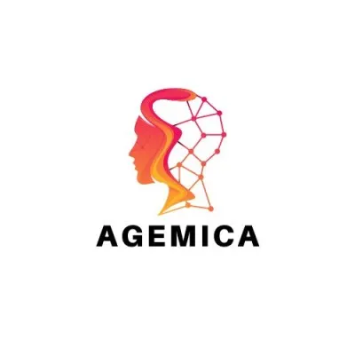
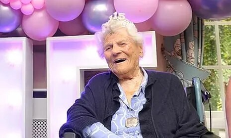
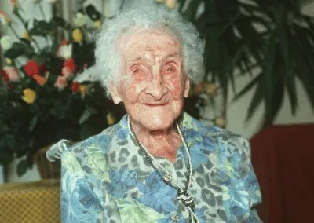

22 September 2026
AI, living to 150 and Agemica
My thoughts on AI, living to 150, Agemica and why its crypto token made me suspicious.
READ POST ↗Life extension, cryonics, and what the future might make possible.
Ever since I was a kid, I’ve been interested in futuristic technology, especially cryonics and life extension.
Part of why I’m interested in AI is that I believe it could help cure diseases and be a great help to us. That’s what connects these interests for me.
This is where I’ll write more about longevity as I learn.
Read the AI blog ↗
22 September 2026
My thoughts on AI, living to 150, Agemica and why its crypto token made me suspicious.
READ POST ↗Records checked 20 September 2026.

Oldest verified living person
117 years old
Born on 21 August 1909 in Hampshire, England. She became the world’s oldest verified living person on 30 April 2025, and is also the oldest British person on record.
Age as of 20 September 2026.

Oldest verified person ever
122 years, 164 days
Jeanne Calment lived in France from 21 February 1875 to 4 August 1997. Her lifespan remains the longest fully authenticated human lifespan recognised by Guinness World Records.